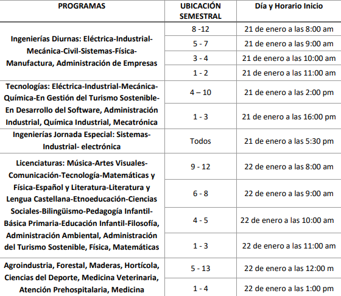

AJUSTE HORARIO
Fecha de publicación: 21 de enero de 2025
En la Universidad Tecnológica de Pereira, los ajustes de horario académico buscan optimizar
la programación de clases y
actividades para mejorar la disponibilidad de los estudiantes y profesores.
Estos ajustes se aplican especialmente en carreras
con alta carga práctica, como ingeniería,
para garantizar el uso eficiente de laboratorios y recursos, sin afectar la calidad educativa.